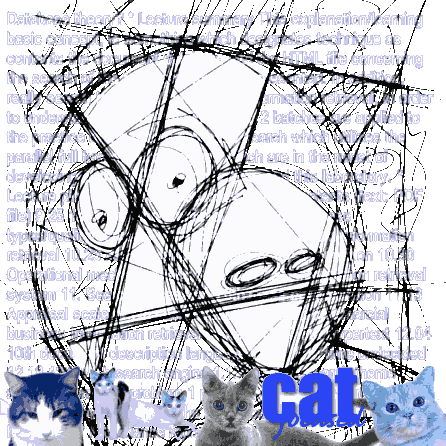

<!DOCTYPE HTML PUBLIC "-//W3C//DTD HTML 4.01 Transitional//EN"
    "http://www.w3.org/TR/html4/loose.dtd">
<link rel="stylesheet" href="lhohq2.css" type="text/css">

<html><head>
<title>lhohq how to steal an election, an essay by george w. bush</title>
<meta http-equiv="Content-type" content="text/html; charset=iso-8859-1">
<meta name="robots" content="noindex,follow">
</head>
<body bgcolor="#FFFFFF" style="background-image:url(dollarpussy.jpg); color:#CC0000">

<span style="color:#eeff66">

ABSTRACT Encouraging voters to truthfully reveal their preferences in an election has long been an important issue. Previous studies have shown that some voting protocols are hard to manipulate, but predictably used NP-hardness as the complexity measure. Such a worst-case analysis may be an insufficient guarantee of resistance to manipulation. Indeed, we demonstrate that NP-hard manipulations may be tractable in the average-case. For this 


<br><p>
<br><p>
<br><p>
<br><p>
<br><p>
<br><p>
<br><p>
<br><p>
<br><p>
<br><p>
purpose, we augment the existing theory of average-case complexity with new concepts; we consider elections distributed with respect to junta
 distributions, which concentrate on hard instances, and introduce a notion of heuristic polynomial time. we use our techniques to prove that a family of important voting protocols is susceptible to manipulation by coalitions, when the number of candidates is constant. categories and subject descriptors f.2 [theory of computation]: analysis of algorithms and problem complexity; i.2.11 [artificial intelligence]: distributed artificial intelligence‹multiagent systems; j.4 [computer applications]: social and behavioral sciences‹economics general terms algorithms, theory, economics keywords computational


<a href="../video_cassette_recorder/VCR.html"></a>


 complexity, voting 1. introduction in multiagent environments, it may be the case that different agents have diverse preferences, and it is therefore important to find a way to aggregate agent preferences. a general scheme for preference aggregation is voting: the agents permission to make digital or hard copies of all or part of this work for personal or <a href="index.html">classroom use</a> is granted without fee provided that copies are not made or distributed for profit or commercial advantage and that copies bear this notice and the full citation on the first page. to copy otherwise, to republish, to post on servers or to redistribute to lists, requires prior specific permission and/or a fee. aamas'06 may 8­12 2006, hakodate, hokkaido, japan. copyright 2006 acm 1-59593-303-4/06/0005 ...$5.00. reveal their preferences by ranking a set of candidates, and a winner is determined according to a voting protocol. the candidates can be various entities such as beliefs or plans, and indeed may be potential real-life parliament members. things are made complicated by the fact that in many settings (as in reality) the agents are self-interested. such an agent may reveal its 

<a href="../busch_foto/studio_congres.html">preferences untruthfully</a>, 


if it believes this would make the final outcome of the elections more favorable for it. consequently, the outcome may be one that does not maximize social welfare. this problem is provably acute: it is known [8, 10] that, for elections with three or more candidates, in any voting protocol that is nondictatorial, 1 there are elections where an agent is better off by voting untruthfully. fortunately, it is reasonable to make the assumption that the agents are computationally bounded. therefore, although in principle an agent may be able to manipulate an election, the computation required may be infeasible. this has motivated researchers to study the computational complexity of manipulating voting protocols. it has long been known [3] that there are voting protocols that are np-hard to manipulate by a single voter. recent results by conitzer and sandholm [5, 4] show that some manipulations of common voting protocols are np-hard, even for a small number of candidates. moreover, in [6], it is shown that adding a pre-round to some voting protocols can make manipulations hard (even pspace-hard in some cases). elkind and lipmaa [7] show that the notion of pre-round, together with one-way functions, can be used to construct protocols that are hard to manipulate even by a large minority fraction of the voters. in computer science, the notion of hardness is usually considered in the sense of worst-case complexity. not surprisingly, most results on the complexity of manipulation use np-hardness as the complexity measure. however, it may still be the case that most instances of the problem are easy to manipulate. a relatively little-known theory of average case complexity exists [11]; that theory introduces the concept of distributional problems, and defines what a reduction between distributional problems is. it is also known that averagecase complete problems exist (albeit artificial ones, such as a distributional version of the halting problem). sadly, it is very difficult to show that a certain problem is average-case complete, and such results are known only for a handful of problems. additionally, the goal of the 1in a dictatorial protocol, there is an agent that dictates the outcome regardless of the others' choices.

<a href="../insider_trading/legal-challenges.html"></a>


 e x i s t i n g   t h e o r y   i s   t o   d e f i n e   w h e n   a   p r o b l e m   i s   h a r d   i n   t h e   a v e r a g e - c a s e ;   i t   d o e s   n o t   p r o v i d e   c r i t e r i a   f o r   d e c i d i n g   w h e n   a   p r o b l e m   i s   e a s y .   a   s t e p   t o w a r d s   s h o w i n g   t h a t   a   m a n i p u l a t i o n   i s   e a s y   o n   a v e r a g e   w a s   m a d e   i n   [ 7 ] .   i t   i n v o l v e s   a n   a n a l y s i s   o f   t h e   p l u r a l i t y   p r o t o c o l   w i t h   a   p r e - r o u n d ,   b u t   f o c u s e s   o n   a   v e r y   s p e c i f i c   d i s t r i b u t i o n ,   w h i c h   d o e s   n o t   s a t i s f y   s o m e   b a s i c   d e s i d e r a t a   a s   t o   w h a t   p r o p e r t i e s   a n    i n t e r e s t i n g    d i s t r i b u t i o n   s h o u l d   h a v e .   i n   t h i s   p a p e r ,   w e   e n g a g e   i n   a   n o v e l   a v e r a g e - c a s e   a n a l y s i s ,   b a s e d   o n   c r i t e r i a   w e   p r o p o s e .   c o m i n g   u p   w i t h   a n    i n t e r e s t i n g    d i s t r i b u t i o n   o f   p r o b l e m   i n s t a n c e s   w i t h   r e s p e c t   t o   w h i c h   t h e   a v e r a g e - c a s e   c o m p l e x i t y   i s   c o m p u t e d   i s   a   d i f f i c u l t   t a s k ,   a n d   t h e   s o l u t i o n   m a y   b e   c o n t r o v e r s i a l .   w e   a n a l y z e   p r o b l e m s   w h o s e   i n s t a n c e s   a r e   d i s t r i b u t e d   w i t h   r e s p e c t   t o   a   j u n t a   d i s t r i b u t i o n .   s u c h   a   d i s t r i b u t i o n   m u s t   s a t i s f y   s e v e r a l   c o n d i t i o n s ,   w h i c h   ( a r g u a b l y )   g u a r a n t e e   t h a t   i t   f o c u s e s   o n   i n s t a n c e s   t h a t   a r e   h a r d e r   t o   m a n i p u l a t e .   w e   c o n s i d e r   a   p r o t o c o l   t o   b e   s u s c e p t i b l e   t o   m a n i p u l a t i o n   w h e n   t h e r e   i s   a   p o l y n o m i a l   t i m e   a l g o r i t h m   t h a t   c a n   u s u a l l y   m a n i p u l a t e   i t :   t h e   p r o b a b i l i t y   o f   f a i l u r e   ( w h e n   t h e   i n s t a n c e s   a r e   d i s t r i b u t e d   a c c o r d i n g   t o   a   j u n t a   d i s t r i b u t i o n )   m u s t   b e   i n v e r s e - p o l y n o m i a l .   s u c h   a n   a l g o r i t h m   i s   k n o w n   a s   a   h e u r i s t i c   p o l y n o m i a l   t i m e   a l g o r i t h m .   w e   u s e   t h e s e   n e w   m e t h o d s   t o   p r o v e   o u r   m a i n   r e s u l t :   a n   i m p o r t a n t   f a m i l y   o f   p r o t o c o l s ,   c a l l e d   s c o r i n g   p r o t o c o l s ,   i s   s u s c e p t i b l e   t o   c o a l i t i o n a l   m a n i p u l a t i o n   w h e n   t h e   n u m b e r   o f   c a n d i d a t e s   i s   c o n s t a n t .   s p e c i f i c a l l y ,   w e   c o n t e m p l a t e   s e n s i t i v e   s c o r i n g   p r o t o c o l s ,   w h i c h   i n c l u d e   s u c h   w e l l - k n o w n   p r o t o c o l s   a s   b o r d a   a n d   v e t o .   t o   a c c o m p l i s h   t h i s   t a s k ,   w e   d e f i n e   a   n a t u r a l   d i s t r i b u t i o n  º  "   o v e r   t h e   i n s t a n c e s   o f   a   w e l l - d e f i n e d   c o a l i t i o n a l   m a n i p u l a t i o n   p r o b l e m ,   a n d   s h o w   t h a t   t h i s   i s   a   j u n t a   d i s t r i b u t i o n .   f u r t h e r m o r e ,   w e   p r e s e n t   t h e   m a n i p u l a t i o n   a l g o r i t h m   g r e e d y ,   a n d   p r o v e   t h a t   i t   u s u a l l y   s u c c e e d s   w i t h   r e s p e c t   t o  º  " .   w e   a l s o   s h o w   t h a t   a l l   p r o t o c o l s   a r e   s u s c e p t i b l e   t o   a   c e r t a i n   s e t t i n g   o f   m a n i p u l a t i o n ,   w h e r e   t h e   m a n i p u l a t o r   i s   u n s u r e   a b o u t   t h e   o t h e r s    v o t e s .   t h i s   r e s u l t   d e p e n d s   u p o n   a   b a s i c   c o n j e c t u r e   r e g a r d i n g   j u n t a   d i s t r i b u t i o n s ,   b u t   a l s o   h a s   i m p l i c a t i o n s   t h a t   t r a n s c e n d   o u r   s p e c i f i c   d e f i n i t i o n   o f   t h e s e   d i s t r i b u t i o n s .   i n   s e c t i o n   2 ,   w e   o u t l i n e   s o m e   i m p o r t a n t   v o t i n g   p r o t o c o l s ,   a n d   p r o p e r l y   d e f i n e   t h e   m a n i p u l a t i o n   p r o b l e m s   w e   s h a l l   d i s c u s s .   i n   s e c t i o n   3 ,   w e   f o r m a l l y   i n t r o d u c e   t h e   t o o l s   f o r   o u r   a v e r a g e   c a s e   a n a l y s i s :   j u n t a   d i s t r i b u t i o n s ,   h e u r i s t i c   p o l y n o m i a l   t i m e ,   a n d   s u s c e p t i b i l i t y   t o   m a n i p u l a t i o n s .   i n   s e c t i o n   4   w e   p r o v e   o u r   m a i n   r e s u l t :   s e n s i t i v e   s c o r i n g   p r o t o c o l s   a r e   s u s c e p t i b l e   t o   c o a l i t i o n a l   m a n i p u l a t i o n   w i t h   f e w   c a n d i d a t e s .   i n   s e c t i o n   5 ,   w e   d i s c u s s   t h e   c a s e   w h e n   a   s i n g l e   m a n i p u l a t o r   i s   u n s u r e   a b o u t   t h e   o t h e r   v o t e r s    v o t e s .   f i n a l l y ,   i n   s e c t i o n   6 ,   w e   p r e s e n t   c o n c l u s i o n s   a n d   d i r e c t i o n s   f o r   f u t u r e   r e s e a r c h .   2 .   p r e l i m i n a r i e s   w e   f i r s t   d e s c r i b e   s o m e   c o m m o n   v o t i n g   p r o t o c o l s   a n d   f o r m a l l y   d e f i n e   t h e   m a n i p u l a t i o n   p r o b l e m s   w i t h   w h i c h   w e   s h a l l   d e a l .   n e x t ,   w e   i n t r o d u c e   a   u s e f u l   l e m m a   f r o m   p r o b a b i l i t y   t h e o r y .   2 . 1   e l e c t i o n s   a n d   m a n i p u l a t i o n s   a n   e l e c t i o n   c o n s i s t s   o f   a   s e t   c   o f   m   c a n d i d a t e s ,   a n d   a   s e t   v   o f   n   v o t e r s ,   w h o   p r o v i d e   a   t o t a l   o r d e r   o n   t h e   c a n d i d a t e s .   a n   e l e c t i o n   a l s o   i n c l u d e s   a   w i n n e r   d e t e r m i n a t i o n   f u n c t i o n   f r o m   t h e   s e t   o f   a l l   p o s s i b l e   c o m b i n a t i o n s   o f   v o t e s   t o   c .   w e   n o t e   t h a t   t h r o u g h o u t   t h i s   p a p e r ,   m   =   o ( 1 ) ,   s o   t h e   c o m p l e x i t y   r e s u l t s   a r e   i n   t e r m s   o f   n .   d i f f e r e n t   v o t i n g   p r o t o c o l s   a r e   d i s t i n g u i s h e d   b y   t h e i r   w i n n e r   d e t e r m i n a t i o n   f u n c t i o n s .   t h e   p r o t o c o l s   w e   s h a l l   d i s c u s s   a r e :   "   s c o r i n g   p r o t o c o l s :   a   s c o r i n g   p r o t o c o l   i s   d e f i n e d   b y   v e c t o r    ±   =    ± 1 ,  ± 2 ,   .   .   .   ,  ± m   ,   s u c h   t h a t  ± 1  "e  ± 2  "e   .   .   .  "e  ± m   a n d  ± i  "   n  "*   { 0 } .   a   c a n d i d a t e   r e c e i v e s  ± i   p o i n t s   f o r   e a c h   v o t e r   w h i c h   r a n k s   i t   i n   t h e   i  t h   p l a c e .   e x a m p l e s   o f   s c o r i n g   p r o t o c o l s   a r e :      p l u r a l i t y :    ±   =     1 ,   0 ,   .   .   .   ,   0 ,   0   .      v e t o :    ±   =     1 ,   1 ,   .   .   .   ,   1 ,   0   .      b o r d a :    ±   =     m  "   1 ,   m  "   2 ,   .   .   .   ,   1 ,   0   .   "   c o p e l a n d :   f o r   e a c h   p o s s i b l e   p a i r   o f   c a n d i d a t e s ,   s i m u l a t e   a n   e l e c t i o n ;   a   c a n d i d a t e   w i n s   s u c h   a   p a i r w i s e   e l e c t i o n   i f   m o r e   v o t e r s   p r e f e r   i t   o v e r   t h e   o p p o n e n t .   a   c a n d i d a t e   g e t s   1   p o i n t   f o r   e a c h   p a i r w i s e   e l e c t i o n   i t   w i n s ,   a n d  " 1   f o r   e a c h   p a i r w i s e   e l e c t i o n   i t   l o s e s .   "   m a x i m i n :   a   c a n d i d a t e  s   s c o r e   i n   a   p a i r w i s e   e l e c t i o n   i s   t h e   n u m b e r   o f   v o t e r s   t h a t   p r e f e r   i t   o v e r   t h e   o p p o n e n t .   t h e   w i n n e r   i s   t h e   c a n d i d a t e   w h o s e   m i n i m u m   s c o r e   o v e r   a l l   p a i r w i s e   e l e c t i o n s   i s   h i g h e s t .   "   s i n g l e   t r a n s f e r a b l e   v o t e   ( s t v ) :   t h e   e l e c t i o n   p r o c e e d s   i n   r o u n d s .   i n   e a c h   r o u n d ,   t h e   c a n d i d a t e  s   s c o r e   i s   t h e   n u m b e r   o f   v o t e r s   t h a t   r a n k   i t   h i g h e s t   a m o n g   t h e   r e m a i n i n g   c a n d i d a t e s ;   t h e   c a n d i d a t e   w i t h   t h e   l o w e s t   s c o r e   i s   e l i m i n a t e d .   r e m a r k   1 .   w e   a s s u m e   t h a t   t i e - b r e a k i n g   i s   a l w a y s   a d v e r s a r i a l   t o   t h e   m a n i p u l a t o r .   2   i n   t h e   c a s e   o f   w e i g h t e d   v o t e s ,   a   v o t e r   w i t h   w e i g h t   k  "   n   i s   n a t u r a l l y   r e g a r d e d   a s   k   v o t e r s   w h o   v o t e   u n a n i m o u s l y .   i n   t h i s   p a p e r ,   w e   c o n s i d e r   w e i g h t s   i n   [ 0 ,   1 ] .   t h i s   i s   e q u i v a l e n t ,   s i n c e   a n y   s e t   o f   i n t e g e r   w e i g h t s   i n   t h e   r a n g e   1 ,   .   .   .   ,   p o l y n   c a n   b e   s c a l e d   d o w n   t o   w e i g h t s   i n   t h e   s e g m e n t   [ 0 ,   1 ]   w i t h   o ( l o g n )   b i t s   o f   p r e c i s i o n .   t h e   m a i n   r e s u l t s   o f   t h e   p a p e r   f o c u s   o n   s c o r i n g   p r o t o c o l s .   w e   s h a l l   r e q u i r e   t h e   f o l l o w i n g   d e f i n i t i o n :   d e f i n i t i o n   1 .   l e t   p   b e   a   s c o r i n g   p r o t o c o l   w i t h   p a r a m e t e r s    ±   =    ± 1 ,  ± 2 ,   .   .   .   ,  ± m   .   w e   s a y   t h a t   p   i s   s e n s i t i v e   i f f  ± 1  "e  ± 2  "e   .   .   .  "e  ± m" 1   >  ± m   =   0   ( n o t i c e   t h e   s t r i c t   i n e q u a l i t y   o n   t h e   r i g h t ) .   I n   p a r t i c u l a r ,   B o r d a   a n d   V e t o   a r e   s e n s i t i v e   s c o r i n g   p r o t o c o l s .   R e m a r k   2 .   G e n e r a l l y ,   f r o m   a n y   s c o r i n g   p r o t o c o l   w i t h  ± m" 1   >  ± m ,   a n   e q u i v a l e n t   s e n s i t i v e   s c o r i n g   p r o t o c o l   c a n   b e   o b t a i n e d   b y   s u b t r a c t i n g  ± m   o n   a   c o o r d i n a t e - b y - c o o r d i n a t e   b a s i s   f r o m   t h e   v e c t o r    ± .   M o r e o v e r ,   o b s e r v e   t h a t   i f   a   p r o t o c o l   i s   a   s c o r i n g   p r o t o c o l   b u t   i s   n o t   s e n s i t i v e ,   a n d  ± m   =   0 ,   t h e n  ± m" 1   =   0 .   I n   t h i s   c a s e ,   f o r   t h r e e   c a n d i d a t e s   i t   i s   e q u i v a l e n t   t o   t h e   p l u r a l i t y   p r o t o c o l ,   f o r   w h i c h   m o s t   m a n i p u l a t i o n s   a r e   t r a c t a b l e   e v e n   i n   t h e   w o r s t - c a s e .   T h e r e f o r e ,   i t   i s   s u f f i c i e n t   t o   r e s t r i c t   o u r   r e s u l t s   t o   s e n s i t i v e   s c o r i n g   p r o t o c o l s .   2 T h i s   i s   a   s t a n d a r d   a s s u m p t i o n ,   a l s o   m a d e ,   f o r   e x a m p l e ,   i n   [ 5 ,   4 ] .

 W e   n e x t   c o n s i d e r   s o m e   t y p e s   o f   m a n i p u l a t i o n s ,   s t a t e   t h e   a p p r o p r i a t e   c o m p l e x i t y   r e s u l t s ,   a n d   i n t r o d u c e   s o m e   n o t a t i o n s .   R e m a r k   3 .   W e   d i s c u s s   t h e   c o n s t r u c t i v e   c a s e s ,   w h e r e   t h e   g o a l   i s   t r y i n g   t o   m a k e   a   c a n d i d a t e   w i n ,   a s   o p p o s e d   t o   d e s t r u c t i v e   m a n i p u l a t i o n ,   w h e r e   t h e   g o a l   i s   t o   m a k e   a   c a n d i d a t e   l o s e .   C o n s t r u c t i v e   m a n i p u l a t i o n s   a r e   a l w a y s   a t   l e a s t   a s   h a r d   ( i n   t h e   w o r s t - c a s e   s e n s e )   a s   t h e i r   d e s t r u c t i v e   c o u n t e r p a r t s ,   a n d   i n   s o m e   c a s e s   s t r i c t l y   h a r d e r   ( i f   o n e   i s   a b l e   t o   d e t e r m i n e   w h e t h e r   p   c a n   b e   m a d e   t o   w i n ,   o n e   c a n   a l s o   a s k   w h e t h e r   a n y   o f   t h e   o t h e r   m  "   1   c a n d i d a t e s   c a n   b e   m a d e   t o   w i n ,   t h u s   m a k i n g   p   l o s e ) .   D e f i n i t i o n   2 .   I n   t h e   I n d i v i d u a l - M a n i p u l a t i o n   p r o b l e m ,   w e   a r e   g i v e n   a l l   t h e   o t h e r   v o t e s ,   a n d   a   p r e f e r r e d   c a n d i d a t e   p .   W e   a r e   a s k e d   w h e t h e r   t h e r e   i s   a   w a y   f o r   t h e   m a n i p u l a t o r   t o   c a s t   i t s   v o t e   s o   t h a t   p   w i n s .   B a r t h o l d i   a n d   O r l i n   [ 3 ]   s h o w   t h a t   I M   i s   N P - c o m p l e t e   i n   S i n g l e   T r a n s f e r a b l e   V o t e ,   p r o v i d e d   t h e   n u m b e r   o f   c a n d i d a t e s   i s   u n b o u n d e d .   H o w e v e r ,   t h e   p r o b l e m   i s   i n   P   f o r   m o s t   v o t i n g   s c h e m e s ,   a n d   h e n c e   w i l l   n o t   b e   s t u d i e d   h e r e .   D e f i n i t i o n   3 .   I n   t h e   C o a l i t i o n a l - W e i g h t e d M a n i p u l a t i o n   ( C W M )   p r o b l e m ,   w e   a r e   g i v e n   a   s e t   o f   w e i g h t e d   v o t e s   S ,   t h e   w e i g h t s   o f   a   s e t   o f   v o t e s   T   w h i c h   h a v e   n o t   b e e n   c a s t ,   a n d   a   p r e f e r r e d   c a n d i d a t e   p .   W e   a r e   a s k e d   w h e t h e r   t h e r e   i s   a   w a y   t o   c a s t   t h e   v o t e s   i n   T   s o   t h a t   p   w i n s   t h e   e l e c t i o n .   W e   k n o w   [ 5 ,   4 ]   t h a t   C W M   i s   N P - c o m p l e t e   i n   B o r d a ,   V e t o   a n d   S i n g l e   T r a n s f e r a b l e   V o t e ,   e v e n   w i t h   3   c a n d i d a t e s ,   a n d   i n   M a x i m i n   a n d   C o p e l a n d   w i t h   a t   l e a s t   4   c a n d i d a t e s .   T h e   C W M   v e r s i o n   t h a t   w e   s h a l l   a n a l y z e ,   w h i c h   i s   s p e c i f i c a l l y   t a i l o r e d   f o r   s c o r i n g   p r o t o c o l s ,   i s   a   s l i g h t l y   m o d i f i e d   v e r s i o n   w h o s e   a n a l y s i s   i s   m o r e   s t r a i g h t f o r w a r d :   D e f i n i t i o n   4 .   I n   t h e   S c o r i n g - C o a l i t i o n a l - W e i g h t e d M a n i p u l a t i o n   ( S C W M )   p r o b l e m ,   w e   a r e   g i v e n   a n   i n i t i a l   s c o r e   S [ c ]   f o r   e a c h   c a n d i d a t e   c ,   t h e   w e i g h t s   o f   a   s e t   o f   v o t e s   T   w h i c h   h a v e   n o t   b e e n   c a s t ,   a n d   a   p r e f e r r e d   c a n d i d a t e   p .   W e   a r e   a s k e d   w h e t h e r   t h e r e   i s   a   w a y   t o   c a s t   t h e   v o t e s   i n   T   s o   t h a t   p   w i n s   t h e   e l e c t i o n .   S [ c ]   c a n   b e   i n t e r p r e t e d   a s   c  s   t o t a l   s c o r e   f r o m   t h e   v o t e s   i n   S .   H o w e v e r ,   w e   d o   n o t   r e q u i r e   t h a t   t h e r e   e x i s t   a   c o m b i n a t i o n   o f   v o t e s   t h a t   a c t u a l l y   i n d u c e s   S [ c ]   f o r   a l l   c .   D e f i n i t i o n   5 .   I n   t h e   U n c e r t a i n - V o t e s - W e i g h t e d E v a l u a t i o n   ( U V W E )   p r o b l e m ,   w e   a r e   g i v e n   a   w e i g h t   f o r   e a c h   v o t e r ,   a   d i s t r i b u t i o n   o v e r   a l l   t h e   v o t e s ,   a   c a n d i d a t e   p ,   a n d   a   n u m b e r   r  "   [ 0 ,   1 ] .   W e   a r e   a s k e d   w h e t h e r   t h e   p r o b a b i l i t y   o f   p   w i n n i n g   i s   g r e a t e r   t h a n   r .   D e f i n i t i o n   6 .   I n   t h e   U n c e r t a i n - V o t e s - W e i g h t e d M a n i p u l a t i o n   ( U V W M )   p r o b l e m ,   w e   a r e   g i v e n   a   s i n g l e   m a n i p u l a t i v e   v o t e r   w i t h   a   w e i g h t ,   w e i g h t s   f o r   a l l   o t h e r   v o t e r s ,   a   d i s t r i b u t i o n   o v e r   a l l   t h e   o t h e r s    v o t e s ,   a   c a n d i d a t e   p ,   a n d   a   n u m b e r   r ,   w h e r e   r  "   [ 0 ,   1 ] .   W e   a r e   a s k e d   w h e t h e r   t h e   m a n i p u l a t o r   c a n   c a s t   i t s   v o t e   s o   t h a t   p   w i n s   w i t h   p r o b a b i l i t y   g r e a t e r   t h a n   r .   I f   C W M   i s   N P - h a r d   i n   a   p r o t o c o l ,   t h e n   U V W E   a n d   U V W M   a r e   a l s o   N P - h a r d   i n   i t   [ 5 ] .   T h e s e   p r o b l e m s   w i l l   b e   s t u d i e d   i n   S e c t i o n   5 .   W e   m a k e   t h e   a s s u m p t i o n   t h a t   t h e   g i v e n   d i s t r i b u t i o n s   o v e r   t h e   o t h e r s    v o t e s   c a n   b e   s a m p l e d   i n   p o l y n o m i a l   t i m e .   2 . 2   C h e r n o f f  s   B o u n d s   T h e   f o l l o w i n g   l e m m a   w i l l   b e   o f   m u c h   u s e   l a t e r   o n .   I n f o r m a l l y ,   i t   s t a t e s   t h a t   t h e   a v e r a g e   o f   i n d e p e n d e n t   i d e n t i c a l l y   d i s t r i b u t e d   ( i . i . d . )   r a n d o m   v a r i a b l e s   i s   a l m o s t   a l w a y s   c l o s e   t o   t h e   e x p e c t a t i o n .   L e m m a   1   ( C h e r n o f f  s   B o u n d s ) .   L e t   X 1 ,   .   .   .   ,   X t   b e   i . i . d .   r a n d o m   v a r i a b l e s   s u c h   t h a t   a  "d   X i  "d   b   a n d   E [ X i ]   =  º .   T h e n   f o r   a n y       >   0 ,   i t   h o l d s   t h a t :   "   P r [   1   t   P t   i = 1   X i  "e  º   +     ]  "d   e  " 2 t     2   ( b" a ) 2   "   P r [   1   t   P t   i = 1   X i  "d  º  "     ]  "d   e  " 2 t     2   ( b" a ) 2   3 .   J U N T A   D I S T R I B U T I O N S   A N D   S U S C E P T I B L E   M E C H A N I S M S   I n   t h i s   s e c t i o n   w e   l a y   t h e   m a t h e m a t i c a l   f o u n d a t i o n s   r e q u i r e d   f o r   a n   a v e r a g e - c a s e   a n a l y s i s   o f   t h e   c o m p l e x i t y   o f   m a n i p u l a t i o n s .   A l l   o f   t h e   d e f i n i t i o n s   a r e   a s   g e n e r a l   a s   p o s s i b l e ;   t h e y   c a n   b e   a p p l i e d   t o   t h e   m a n i p u l a t i o n   o f   a n y   m e c h a n i s m ,   n o t   m e r e l y   t o   t h e   m a n i p u l a t i o n   o f   v o t i n g   p r o t o c o l s .   W e   d e s c r i b e   a   d i s t r i b u t i o n   o v e r   t h e   i n s t a n c e s   o f   a   p r o b l e m   a s   a   c o l l e c t i o n   o f   d i s t r i b u t i o n s  º 1 ,   .   .   .   ,  º n ,   .   .   . ,   w h e r e  º n   i s   a   d i s t r i b u t i o n   o v e r   t h e   i n s t a n c e s   x   s u c h   t h a t   | x |   =   n .   W e   w i s h   t o   a n a l y z e   p r o b l e m s   w h o s e   i n s t a n c e s   a r e   d i s t r i b u t e d   w i t h   r e s p e c t   t o   a   d i s t r i b u t i o n   w h i c h   f o c u s e s   o n   h a r d - t o - m a n i p u l a t e   i n s t a n c e s .   I d e a l l y ,   w e   w o u l d   l i k e   t o   i n s u r e   t h a t   i f   o n e   m a n a g e s   t o   p r o d u c e   a n   a l g o r i t h m   w h i c h   c a n   u s u a l l y   m a n i p u l a t e   i n s t a n c e s   a c c o r d i n g   t o   t h i s   d i s t i n g u i s h e d    d i f f i c u l t    d i s t r i b u t i o n ,   t h e   a l g o r i t h m   w o u l d   a l s o   u s u a l l y   s u c c e e d   w h e n   t h e   i n s t a n c e s   a r e   d i s t r i b u t e d   w i t h   r e s p e c t   t o   m o s t   o t h e r   r e a s o n a b l e   d i s t r i b u t i o n s .   D e f i n i t i o n   7 .   L e t  º   =   {º n } n" N   b e   a   d i s t r i b u t i o n   o v e r   t h e   p o s s i b l e   i n s t a n c e s   o f   a n   N P - h a r d   m a n i p u l a t i o n   p r o b l e m   M .  º   i s   a   j u n t a   d i s t r i b u t i o n   i f   a n d   o n l y   i f  º   h a s   t h e   f o l l o w i n g   p r o p e r t i e s :   1 .   H a r d n e s s :   T h e   r e s t r i c t i o n   o f   M   t o  º   i s   t h e   m a n i p u l a t i o n   p r o b l e m   w h o s e   p o s s i b l e   i n s t a n c e s   a r e   o n l y :   [   n" N   { x   :   | x |   =   n  "'  º n ( x )   >   0 } .   D e c i d i n g   t h i s   r e s t r i c t e d   p r o b l e m   i s   s t i l l   N P - h a r d .   2 .   B a l a n c e :   T h e r e   e x i s t   a   c o n s t a n t   c   >   1   a n d   N  "   N   s u c h   t h a t   f o r   a l l   n  "e   N :   1   c  "d   P r x"<º   n [ M ( x )   =   1 ]  "d   1  "   1   c   .   3 .   D i c h o t o m y :   f o r   a l l   n   a n d   i n s t a n c e s   x   s u c h   t h a t   | x |   =   n :  º n ( x )  "e   2  " p o l y n  "(  º   n ( x )   =   0 .   I f   M   i s   a   v o t i n g   m a n i p u l a t i o n   p r o b l e m ,   w e   a l s o   r e q u i r e   t h e   f o l l o w i n g   p r o p e r t y :   4 .   S y m m e t r y :   L e t   v   b e   a   v o t e r   w h o s e   v o t e   i s   g i v e n ,   l e t   c 1 ,   c 2     =   p   b e   t w o   c a n d i d a t e s ,   a n d   l e t   i  "   { 1 ,   .   .   .   ,   m } .   T h e   p r o b a b i l i t y   t h a t   v   r a n k s   c 1   i n   t h e   i  t h   p l a c e   i s   t h e   s a m e   a s   t h e   p r o b a b i l i t y   t h a t   v   r a n k s   c 2   i n   t h e   i  t h   p l a c e .

 I f   M   i s   a   c o a l i t i o n a l   m a n i p u l a t i o n   p r o b l e m ,   w e   a l s o   r e q u i r e   t h e   f o l l o w i n g   p r o p e r t y :   5 .   R e f i n e m e n t :   L e t   x   b e   a n   i n s t a n c e   s u c h   t h a t   | x |   =   n   a n d  º n ( x )   >   0 ;   i f   a l l   c o l l u d e r s   v o t e d   i d e n t i c a l l y ,   t h e n   p   w o u l d   n o t   b e   e l e c t e d .   T h e   n a m e    j u n t a   d i s t r i b u t i o n    c o m e s   f r o m   t h e   i d e a   t h a t   i n   s u c h   a   d i s t r i b u t i o n ,   r e l a t i v e l y   f e w    p o w e r f u l    a n d   d i f f i c u l t   i n s t a n c e s   r e p r e s e n t   a l l   t h e   o t h e r   p r o b l e m   i n s t a n c e s .   A l t e r n a t i v e l y ,   o u r   i n t e n t   i s   t o   h a v e   a   f e w   p r o b l e m a t i c   d i s t r i b u t i o n s   ( t h e   f a m i l y   o f   j u n t a   d i s t r i b u t i o n s )   c o n v i n c i n g l y   r e p r e s e n t   a l l   o t h e r   d i s t r i b u t i o n s   w i t h   r e s p e c t   t o   t h e   a v e r a g e - c a s e   a n a l y s i s .   T h e   f i r s t   t h r e e   p r o p e r t i e s   a r e   b a s i c ,   a n d   a r e   r e l e v a n t   t o   p r o b l e m s   o f   m a n i p u l a t i n g   a n y   m e c h a n i s m .   T h e   d e f i n i t i o n   i s   m o d u l a r ,   a n d   a d d i t i o n a l   p r o p e r t i e s   m a y   b e   a d d e d   o n   t o p   o f   t h e   b a s i c   t h r e e ,   i n   c a s e   o n e   w i s h e s   t o   a n a l y z e   a   m e c h a n i s m   w h i c h   i s   n o t   a   v o t i n g   p r o t o c o l .   T h e   e x a c t   c h o i c e   o f   p r o p e r t i e s   i s   o f   e x t r e m e   i m p o r t a n c e   ( a n d ,   a s   w e   m e n t i o n e d   a b o v e ,   m a y   b e   a r g u a b l e ) .   W e   s h a l l   b r i e f l y   e x p l a i n   o u r   c h o i c e s .   H a r d n e s s   i s   m e a n t   t o   i n s u r e   t h a t   t h e   j u n t a   d i s t r i b u t i o n   c o n t a i n s   h a r d   i n s t a n c e s .   B a l a n c e   g u a r a n t e e s   t h a t   a   t r i v i a l   a l g o r i t h m   w h i c h   a l w a y s   a c c e p t s   ( o r   a l w a y s   r e j e c t s )   h a s   a   s i g n i f i c a n t   c h a n c e   o f   f a i l u r e .   T h e   d i c h o t o m y   p r o p e r t y   h e l p s   i n   p r e v e n t i n g   s i t u a t i o n s   w h e r e   t h e   d i s t r i b u t i o n   g i v e s   a   ( p o s i t i v e   b u t )   n e g l i g i b l e   p r o b a b i l i t y   t o   a l l   t h e   h a r d   i n s t a n c e s ,   a n d   a   h i g h   p r o b a b i l i t y   t o   s e v e r a l   e a s y   i n s t a n c e s .   W e   n o w   e x a m i n e   t h e   p r o p e r t i e s   t h a t   a r e   s p e c i f i c   t o   m a n i p u l a t i o n   p r o b l e m s .   T h e   n e c e s s i t y   o f   s y m m e t r y   i s   b e s t   e x p l a i n e d   b y   a n   e x a m p l e .   C o n s i d e r   C W M   i n   S T V   w i t h   m  "e   3 .   O n e   c o u l d   d e s i g n   a   d i s t r i b u t i o n   w h e r e   p   w i n s   i f   a n d   o n l y   i f   a   d i s t i n g u i s h e d   c a n d i d a t e   l o s e s   t h e   f i r s t   r o u n d .   S u c h   a   d i s t r i b u t i o n   c o u l d   b e   t a i l o r e d   t o   s a t i s f y   t h e   o t h e r   c o n d i t i o n s ,   b u t   m i s s e s   m a n y   o f   t h e   h a r d   i n s t a n c e s .   I n   t h e   c o n t e x t   o f   S C W M ,   w e   i n t e r p r e t   s y m m e t r y   i n   t h e   f o l l o w i n g   w a y :   f o r   e v e r y   t w o   c a n d i d a t e s   c 1 ,   c 2     =   p   a n d   y  "   R ,   P r   x"<º n   [ S [ c 1 ]   =   y ]   =   P r   x"<º n   [ S [ c 2 ]   =   y ] .   R e f i n e m e n t   i s   l e s s   i m p o r t a n t   t h a n   t h e   o t h e r   f o u r   p r o p e r t i e s ,   b u t   s e e m s   t o   h e l p   i n   c o n c e n t r a t i n g   t h e   p r o b a b i l i t y   o n   h a r d   i n s t a n c e s .   O b s e r v e   t h a t   r e f i n e m e n t   i s   o n l y   r e l e v a n t   t o   c o a l i t i o n a l   m a n i p u l a t i o n ;   w e   b e l i e v e   t h a t   i n   t h e   a n a l y s i s   o f   i n d i v i d u a l   v o t i n g   m a n i p u l a t i o n   p r o b l e m s ,   t h e   f i r s t   f o u r   p r o p e r t i e s   a r e   s u f f i c i e n t .   D e f i n i t i o n   8 .   [ 1 1 ]   A   d i s t r i b u t i o n a l   p r o b l e m   i s   a   p a i r     L ,  º     w h e r e   L   i s   a   d e c i s i o n   p r o b l e m   a n d  º   i s   a   d i s t r i b u t i o n   o v e r   t h e   s e t   { 0 ,   1 }  "   o f   p o s s i b l e   i n p u t s .   I n f o r m a l l y ,   a n   a l g o r i t h m   i s   a   h e u r i s t i c   p o l y n o m i a l   t i m e   a l g o r i t h m   f o r   a   d i s t r i b u t i o n a l   p r o b l e m   i f   i t   r u n s   i n   p o l y n o m i a l   t i m e ,   a n d   f a i l s   o n l y   o n   a   s m a l l   f r a c t i o n   o f   t h e   i n p u t s .   W e   n o w   g i v e   a   f o r m a l   d e f i n i t i o n ;   t h i s   d e f i n i t i o n   i s   i n s p i r e d   b y   [ 1 1 ]   ( t h e r e   t h e   s a m e   n a m e   i s   u s e d   f o r   a   s o m e w h a t   d i f f e r e n t   d e f i n i t i o n ) .   D e f i n i t i o n   9 .   L e t   M   b e   a   m a n i p u l a t i o n   p r o b l e m   a n d   l e t     M ,  º     b e   a   d i s t r i b u t i o n a l   p r o b l e m .   1 .   A n   a l g o r i t h m   A   i s   a   d e t e r m i n i s t i c   h e u r i s t i c   p o l y n o m i a l   t i m e   a l g o r i t h m   f o r   t h e   d i s t r i b u t i o n a l   m a n i p u l a t i m e ,   a n d   t h e r e   e x i s t s   a   p o l y n o m i a l   p   a n d   N  "   N   s u c h   t h a t   f o r   a l l   n  "e   N :   P r   x"<º   n [ A ( x )     =   M ( x ) ]   <   1   p ( n )   .   ( 1 )   2 .   L e t   A   b e   a   p r o b a b i l i s t i c   a l g o r i t h m ,   w h i c h   u s e s   a   r a n d o m   s t r i n g   s .   A   i s   a   p r o b a b i l i s t i c   h e u r i s t i c   p o l y n o m i a l   t i m e   a l g o r i t h m   f o r   t h e   d i s t r i b u t i o n a l   m a n i p u l a t i o n   p r o b l e m     M ,  º     i f   A   a l w a y s   r u n s   i n   p o l y n o m i a l   t i m e ,   a n d   t h e r e   e x i s t s   a   p o l y n o m i a l   p   a n d   N  "   N   s u c h   t h a t   f o r   a l l   n  "e   N :   P r   x"<º   n , s [ A ( x )     =   M ( x ) ]   <   1   p ( n )   .   ( 2 )   P r o b a b i l i s t i c   a l g o r i t h m s   h a v e   t w o   p o t e n t i a l   s o u r c e s   o f   f a i l u r e :   a n   u n f o r t u n a t e   c h o i c e   o f   i n p u t ,   o r   a n   u n f o r t u n a t e   c h o i c e   o f   r a n d o m   s t r i n g   s .   T h e   s u c c e s s   o r   f a i l u r e   o f   d e t e r m i n i s t i c   a l g o r i t h m s   d e p e n d s   o n l y   o n   t h e   c h o i c e   o f   i n p u t .   W e   n o w   c o m b i n e   a l l   t h e   d e f i n i t i o n s   i n t r o d u c e d   i n   t h i s   s e c t i o n   i n   a n   a t t e m p t   t o   e s t a b l i s h   w h e n   a   m e c h a n i s m   i s   s u s c e p t i b l e   t o   m a n i p u l a t i o n   i n   t h e   a v e r a g e   c a s e .   T h e   f o l l o w i n g   d e f i n i t i o n   a b u s e s   n o t a t i o n   a   b i t :   M   i s   b o t h   u s e d   t o   r e f e r   t o   t h e   m a n i p u l a t i o n   i t s e l f ,   a n d   t h e   c o r r e s p o n d i n g   d e c i s i o n   p r o b l e m .   D e f i n i t i o n   1 0 .   W e   s a y   t h a t   a   m e c h a n i s m   i s   s u s c e p t i b l e   t o   a   m a n i p u l a t i o n   M   i f   t h e r e   e x i s t s   a   j u n t a   d i s t r i b u t i o n  º ,   s u c h   t h a t   t h e r e   e x i s t s   a   d e t e r m i n i s t i c / p r o b a b i l i s t i c   h e u r i s t i c   p o l y n o m i a l   t i m e   a l g o r i t h m   f o r     M ,  º   .   4 .   S U S C E P T I B I L I T Y   T O   S C W M   R e c a l l   [ 5 ,   4 ]   t h a t   i n   B o r d a   a n d   V e t o ,   C W M   i s   N P - h a r d ,   e v e n   w i t h   3   c a n d i d a t e s .   S i n c e   B o r d a   a n d   V e t o   a r e   e x a m p l e s   o f   s e n s i t i v e   s c o r i n g   p r o t o c o l s ,   w e   w o u l d   l i k e   t o   k n o w   h o w   r e s i s t a n t   t h i s   f a m i l y   o f   p r o t o c o l s   r e a l l y   i s   w i t h   r e s p e c t   t o   c o a l i t i o n a l   m a n i p u l a t i o n .   I n   t h i s   s e c t i o n   w e   u s e   t h e   m e t h o d s   f r o m   t h e   p r e v i o u s   s e c t i o n   t o   p r o v e   o u r   m a i n   r e s u l t :   T h e o r e m   1 .   L e t   P   b e   a   s e n s i t i v e   s c o r i n g   p r o t o c o l .   T h e n   P ,   w i t h   c a n d i d a t e s   C   =   { p ,   c 1 ,   .   .   .   ,   c m } ,   m   =   O ( 1 ) ,   i s   s u s c e p t i b l e   t o   S C W M .   I n t u i t i v e l y ,   t h e   i n s t a n c e s   o f   C W M   ( o r   S C W M )   w h i c h   a r e   h a r d   a r e   t h o s e   t h a t   r e q u i r e   a   v e r y   s p e c i f i c   p a r t i t i o n i n g   o f   t h e   v o t e r s   i n   T   t o   s u b s e t s ,   w h e r e   e a c h   s u b s e t   v o t e s   u n a n i m o u s l y .   T h e s e   i n s t a n c e s   a r e   r a r e   i n   a n y   r e a s o n a b l e   d i s t r i b u t i o n ;   t h i s   i n s i g h t   w i l l   u l t i m a t e l y   y i e l d   t h e   t h e o r e m .   T h e   f o l l o w i n g   p r o p o s i t i o n   g e n e r a l i z e s   T h e o r e m   1   o f   [ 5 ]   a n d   T h e o r e m   2   o f   [ 4 ] ,   a n d   j u s t i f i e s   o u r   f o c u s   o n   t h e   f a m i l y   o f   s e n s i t i v e   s c o r i n g   p r o t o c o l s .   A   s t r o n g e r   v e r s i o n   o f   P r o p o s i t i o n   2   h a s   b e e n   i n d e p e n d e n t l y   p r o v e n   i n   [ 9 ] .   N e v e r t h e l e s s ,   w e   i n c l u d e   o u r   p r o o f ,   s i n c e   i t   w i l l   b e   r e q u i r e d   i n   p r o v i n g   t h e   h a r d n e s s   p r o p e r t y   o f   a   j u n t a   d i s t r i b u t i o n   w e   s h a l l   d e s i g n .   P r o p o s i t i o n   2 .   L e t   P   b e   a   s e n s i t i v e   s c o r i n g   p r o t o c o l .   T h e n   C W M   i n   P   i s   N P - h a r d ,   e v e n   w i t h   3   c a n d i d a t e s .   D e f i n i t i o n   1 1 .   I n   t h e   P a r t i t i o n   p r o b l e m ,   w e   a r e   g i v e n   a   s e t   o f   i n t e g e r s   { k i } i" [ t ] ,   s u m m i n g   t o   2 K ,   a n d   a r e   a s k e d   w h e t h e r   a   s u b s e t   o f   t h e s e   i n t e g e r s   s u m   t o   K .  

 P r o o f   o f   P r o p o s i t i o n   2 .   W e   r e d u c e   a n   a r b i t r a r y   i n s t a n c e   o f   P a r t i t i o n   t o   t h e   f o l l o w i n g   C W M   i n s t a n c e .   T h e r e   a r e   3   c a n d i d a t e s ,   a ,   b ,   a n d   p .   I n   S ,   t h e r e   a r e   K ( 4± 1" 2± 2 )" 1   v o t e r s   v o t i n g   a       b       p ,   a n d   K ( 4± 1  "   2± 2 )  "   1   v o t e r s   v o t i n g   b       a       p .   I n   T ,   f o r   e v e r y   k i   t h e r e   i s   a   v o t e   o f   w e i g h t   2 (± 1   +± 2 ) k i .   O b s e r v e   t h a t   f r o m   S ,   b o t h   a   a n d   b   g e t   ( K ( 4± 1  "   2± 2 )  "   1 ) (± 1   +  ± 2 )   p o i n t s .   A s s u m e   f i r s t   t h a t   a   p a r t i t i o n   e x i s t s .   L e t   t h e   v o t e r s   i n   T   i n   o n e   h a l f   o f   t h e   p a r t i t i o n   v o t e   p       a       b ,   a n d   l e t   t h e   o t h e r   h a l f   v o t e   p       b       a .   B y   t h i s   v o t e ,   a   a n d   b   e a c h   h a v e   ( K ( 4± 1  "   2± 2 )  "   1 ) (± 1   +  ± 2 )   +   2 K (± 1   +  ± 2 )± 2   =   (± 1   +  ± 2 ) ( 4 K± 1  "   1 )   v o t e s ,   w h i l e   p   h a s   (± 1   +  ± 2 ) 4 K± 1   p o i n t s ;   t h u s   t h e r e   i s   a   m a n i p u l a t i o n .   C o n v e r s e l y ,   a s s u m e   t h a t   a   m a n i p u l a t i o n   e x i s t s .   C l e a r l y   t h e r e   m u s t   e x i s t   a   m a n i p u l a t i o n   w h e r e   a l l   t h e   v o t e r s   i n   T   v o t e   e i t h e r   p       a       b   o r   p       b       a ,   b e c a u s e   t h e   c o l l u d e r s   d o   n o t   g a i n   a n y t h i n g   b y   n o t   p l a c i n g   p   a t   t h e   t o p   i n   a   s c o r i n g   p r o t o c o l .   I n   t h i s   m a n i p u l a t i o n ,   p   h a s   (± 1   +± 2 ) 4 K± 1   p o i n t s ,   w h i l e   a   a n d   b   a l r e a d y   h a v e   ( K ( 4± 1  "   2± 2 )  "   1 ) (± 1   +  ± 2 )   p o i n t s   f r o m   S .   T h e r e f o r e ,   a   a n d   b   m u s t   g a i n   l e s s   t h a n   ( 2± 2 K   +   1 ) (± 1   +  ± 2 )   p o i n t s   f r o m   t h e   v o t e r s   i n   T .   E a c h   v o t e r   c o r r e s p o n d i n g   t o   k i   c o n t r i b u t e s   2 (± 1   +± 2 )± 2 k i   p o i n t s ;   i t   f o l l o w s   t h a t   t h e   s u m   o f   t h e   k i   c o r r e s p o n d i n g   t o   t h e   v o t e r s   v o t i n g   p       a       b   i s   l e s s   t h a n   K   +   1   2± 2   ,   a n d   l i k e w i s e   f o r   t h e   v o t e r s   v o t i n g   p       b       a .   E q u i v a l e n t l y ,   t h e   s u m   c a n   b e   a t   m o s t   K ,   s i n c e   a l l   k i   a r e   i n t e g e r s   a n d  ± 2  "e   1 .   I n   b o t h   c a s e s   t h e   s u m   m u s t   b e   a t   m o s t   K ;   h e n c e ,   t h i s   i s   a   p a r t i t i o n .   S i n c e   a n   i n s t a n c e   o f   C W M   c a n   b e   t r a n s l a t e d   t o   a n   i n s t a n c e   o f   S C W M   i n   t h e   o b v i o u s   w a y ,   w e   h a v e :   C o r o l l a r y   3 .   L e t   P   b e   a   s e n s i t i v e   s c o r i n g   p r o t o c o l .   I t   h o l d s   t h a t   S C W M   i n   P   i s   N P - h a r d ,   e v e n   w i t h   3   c a n d i d a t e s .   4 . 1   A   J u n t a   D i s t r i b u t i o n   L e t   w ( v )   d e n o t e   t h e   w e i g h t   o f   v o t e r   v ,   a n d   l e t   W   d e n o t e   t h e   t o t a l   w e i g h t   o f   t h e   v o t e s   i n   T ;   P   i s   a   s e n s i t i v e   s c o r i n g   p r o t o c o l .   W e   d e n o t e   | T |   =   n :   t h e   s i z e   o f   T   i s   t h e   s i z e   o f   t h e   i n s t a n c e .   C o n s i d e r   a   d i s t r i b u t i o n  º  "   =   {º"   n } n" N   o v e r   t h e   i n s t a n c e s   o f   C W M   i n   P ,   w i t h   m   +   1   c a n d i d a t e s   p ,   c 1 ,   .   .   .   ,   c m ,   w h e r e   e a c h  º  "   n   i s   i n d u c e d   b y   t h e   f o l l o w i n g   s a m p l i n g   a l g o r i t h m :   1 .  "  v  "   T :   R a n d o m l y   a n d   i n d e p e n d e n t l y   c h o o s e   w ( v )  "   [ 0 ,   1 ]   ( u p   t o   O ( l o g n )   b i t s   o f   p r e c i s i o n ) .   2 .  "  i  "   { 1 ,   .   .   .   ,   m } :   R a n d o m l y   a n d   i n d e p e n d e n t l y   c h o o s e   S [ c i ]  "   [ (± 1  "  ± 2 ) W ,  ± 1 W ]   ( u p   t o   O ( l o g n )   b i t s   o f   p r e c i s i o n ) .   W e   a s s u m e   t h a t   S [ p ]   =   0 ,   i . e . ,   a l l   v o t e r s   i n   S   r a n k   p   l a s t .   T h i s   a s s u m p t i o n   i s   n o t   a   r e s t r i c t i o n .   I f   i t   h o l d s   f o r   a   c a n d i d a t e   c   t h a t   S [ c ]  "d   S [ p ] ,   t h e n   c a n d i d a t e   c   w i l l   s u r e l y   l o s e ,   s i n c e   t h e   c o l l u d e r s   a l l   r a n k   p   f i r s t .   T h e r e f o r e ,   i f   S [ p ]   >   0 ,   w e   m a y   s i m p l y   n o r m a l i z e   t h e   s c o r e s   b y   s u b t r a c t i n g   S [ p ]   f r o m   t h e   s c o r e s   o f   a l l   c a n d i d a t e s .   T h i s   i s   e q u i v a l e n t   t o   o u r   a s s u m p t i o n .   R e m a r k   4 .   W e   b e l i e v e   t h a t  º  "   i s   t h e   m o s t   n a t u r a l   d i s t r i b u t i o n   w i t h   r e s p e c t   t o   w h i c h   c o a l i t i o n a l   m a n i p u l a t i o n   i n   s c o r i n g   p r o t o c o l s   s h o u l d   b e   s t u d i e d .   E v e n   i f   o n e   d i s a g r e e s   w i t h   t h e   e x a c t   d e f i n i t i o n   o f   j u n t a   d i s t r i b u t i o n ,  º  "   s h o u l d   s a t i s f y   m a n y   r e a s o n a b l e   c o n d i t i o n s   o n e   c o u l d   p r o d u c e .   W e   s h a l l ,   o f   c o u r s e ,   ( p r e s e n t l y )   p r o v e   t h a t   t h e   d i s t r i b u t i o n   p o s s e s s e s   t h e   p r o p e r t i e s   o f   a   j u n t a   d i s t r i b u t i o n .   P r o p o s i t i o n   4 .   L e t   P   b e   a   s e n s i t i v e   s c o r i n g   p r o t o c o l .   T h e n  º  "   i s   a   j u n t a   d i s t r i b u t i o n   f o r   S C W M   i n   P   w i t h   C   =   { p ,   c 1 ,   .   .   .   ,   c m } ,   a n d   m   =   O ( 1 ) .   P r o o f .   W e   f i r s t   o b s e r v e   t h a t   t h e   d i c h o t o m y   a n d   s y m m e t r y   c o n d i t i o n s   a r e   o b v i o u s l y   s a t i s f i e d .   T h e   p r o o f   o f   t h e   h a r d n e s s   p r o p e r t y   r e l i e s   o n   t h e   r e d u c t i o n   f r o m   P a r t i t i o n   i n   P r o p o s i t i o n   2 .   T h e   r e d u c t i o n   g e n e r a t e s   i n s t a n c e s   x   o f   C W M   i n   P   w i t h   3   c a n d i d a t e s ,   w h e r e   W   =   4 (± 1   +  ± 2 ) K ,   a n d   S [ a ]   =   S [ b ]   =   ( K ( 4± 1  "   2± 2 )  "   1 ) (± 1   +  ± 2 )   =   (± 1  "  ± 2 / 2 ) W  "   (± 1   +  ± 2 ) ,   f o r   s o m e   K   t h a t   o r i g i n a t e s   i n   t h e   P a r t i t i o n   i n s t a n c e .   T h e s e   i n s t a n c e s   s a t i s f y   (± 1  "± 2 ) W  "d   S [ a ] ,   S [ b ]  "d  ± 1 W .   I t   f o l l o w s   t h a t  º  " ( x )   >   0   ( a f t e r   s c a l i n g   d o w n   t h e   w e i g h t s ) . 3   W e   n o w   p r o v e  º  "   h a s   t h e   b a l a n c e   p r o p e r t y .   I f   f o r   a l l   i ,   S [ c i ]   >   (± 1  "  ± 2 / m ) W ,   t h e n   c l e a r l y   t h e r e   i s   n o   m a n i p u l a t i o n ,   s i n c e   a t   l e a s t  ± 2 W   p o i n t s   a r e   g i v e n   b y   t h e   v o t e r s   i n   T   t o   t h e   u n d e s i r a b l e   c a n d i d a t e s   c 1 ,   .   .   .   ,   c m .   T h i s   h a p p e n s   w i t h   p r o b a b i l i t y   a t   l e a s t   1   m   m   .   O n   t h e   o t h e r   h a n d ,   c o n s i d e r   t h e   s i t u a t i o n   w h e r e   f o r   a l l   i ,   S [ c i ]   <   (± 1  "   m   2  "   1   m 2  ± 2 ) W ;   ( 3 )   t h i s   o c c u r s   w i t h   p r o b a b i l i t y   a t   l e a s t   1   ( m 2 )   m   .   I n t u i t i v e l y ,   i f   t h e   c o l l u d e r s   c o u l d   d i s t r i b u t e   t h e   v o t e s   i n   T   i n   s u c h   a   w a y   t h a t   e a c h   u n d e s i r a b l e   c a n d i d a t e   i s   r a n k e d   l a s t   i n   e x a c t l y   1 / m - f r a c t i o n   o f   t h e   v o t e s ,   t h i s   w o u l d   b e   a   s u c c e s s f u l   m a n i p u l a t i o n :   e a c h   u n d e s i r a b l e   c a n d i d a t e   w o u l d   g a i n   a t   m o s t   a n   a d d i t i o n a l   m" 1   m  ± 2 W   p o i n t s .   U n f o r t u n a t e l y ,   t h i s   i s   u s u a l l y   n o t   t h e   c a s e ,   b u t   t h e   f o l l o w i n g   c o n d i t i o n   i s   s u f f i c i e n t   f o r   a   s u c c e s s f u l   m a n i p u l a t i o n   ( a s s u m i n g   c o n d i t i o n   ( 3 )   h o l d s ) .   P a r t i t i o n   t h e   v o t e r s   i n   T   t o   m   d i s j o i n t   s u b s e t s   p 1 ,   .   .   .   ,   p i   ( w . l . o . g .   o f   s i z e   n / m ) ,   a n d   d e n o t e   b y   W p   i   t h e   t o t a l   w e i g h t   o f   t h e   v o t e s   i n   p i .   T h e   c o n d i t i o n   i s   t h a t   f o r   a l l   i  "   { 1 ,   .   .   .   ,   m } :   ( 1  "   1 / m )   …   1 / 2   …   n / m  "d   W p   i  "d   ( 1   +   1 / m )   …   1 / 2   …   n / m .   ( 4 )   T h i s   c o n d i t i o n   i s   s u f f i c i e n t ,   b e c a u s e   i f   t h e   v o t e r s   i n   p i   a l l   r a n k   c i   l a s t ,   t h e   f r a c t i o n   o f   t h e   v o t e s   i n   T   w h i c h   g i v e s   c i   p o i n t s   i s   a t   m o s t :   ( m  "   1 ) ( 1   +   1 / m )   ( m  "   1 ) ( 1   +   1 / m )   +   1  "   1 / m   =   m   2  "   1   m 2   +   m  "   2   .   H e n c e   t h e   n u m b e r   o f   p o i n t s   c i   g a i n s   f r o m   t h e   c o l l u d e r s   i s   a t   m o s t :   m   2  "   1   m 2   +   m  "   2  ± 2  "d   m   2  "   1   m 2  ± 2   <  ± 1 W  "   S [ c i ] .   F u r t h e r m o r e ,   b y   L e m m a   1   a n d   t h e   f a c t   t h a t   t h e   e x p e c t e d   t o t a l   w e i g h t   o f   n / m   v o t e s   i s   1 / 2   …   n / m ,   t h e   p r o b a b i l i t y   t h a t   c o n d i t i o n   ( 4 )   h o l d s   i s   a t   l e a s t   1  "   2 e  "   2   n   m 3   .   S i n c e   m   i s   a   c o n s t a n t ,   t h i s   p r o b a b i l i t y   i s   l a r g e r   t h a n   1 / 2   f o r   a   l a r g e   e n o u g h   n .   3 I t   s e e m s   t h e   r e d u c t i o n   c a n   b e   g e n e r a l i z e d   f o r   a   l a r g e r   n u m b e r   o f   c a n d i d a t e s .   T h e   h a r d   i n s t a n c e s   a r e   t h e   o n e s   w h e r e   a l l   u n d e s i r a b l e   c a n d i d a t e s   b u t   t w o   h a v e   a p p r o x i m a t e l y   (± 1  "± 2 ) W   i n i t i a l   p o i n t s ,   a n d   t w o   p r o b l e m a t i c   c a n d i d a t e s   h a v e   a p p r o x i m a t e l y   (± 1  "  ± m / 2 ) W   p o i n t s .   T h e s e   i n s t a n c e s   h a v e   a   p o s i t i v e   p r o b a b i l i t y   u n d e r  º  " .

</span>

</body>
</html>